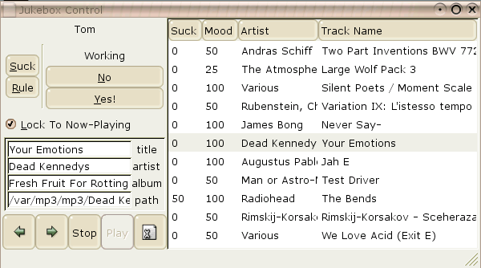
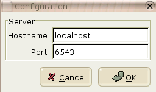
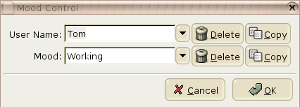

What Jukebox?
Tam (Track Attribute Manager) jukebox is a system that randomly picks
songs to play, and considers
every track you have to be in every playlist--until you say otherwise.
Then it plays them with a relative frequency depending on how much
you think they suck. Simple.
Sounds Nice, Can I Run It?
The odds are that you probably can't run it! At the moment it requires
a mono platform that has ESound (esd), and Gtk# which I believe limits
you to recent releases of Linux and some of its closer friends. Someday
it will run on Windows, if the GStreamer team ever decides to finalize
their API.
Downloads
There are no Windows(TM) installers or unix packages right now, but
there is a spiffy snapshot with
almost all the binaries and patches
you need to run it. See the
SourceForge
download page to see what's available.
The Inevitable Screenshots
These screenshots are from a gnome-2 desktop. But of course!
The main window:

The beautiful configuration dialog:

What kind of day are you having?
